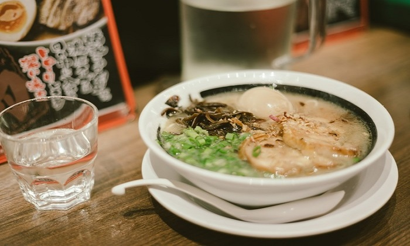
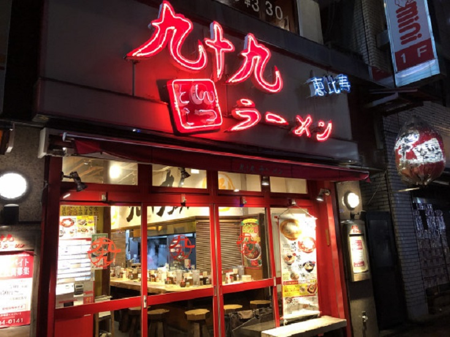
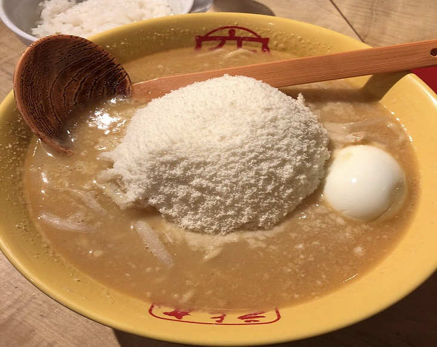
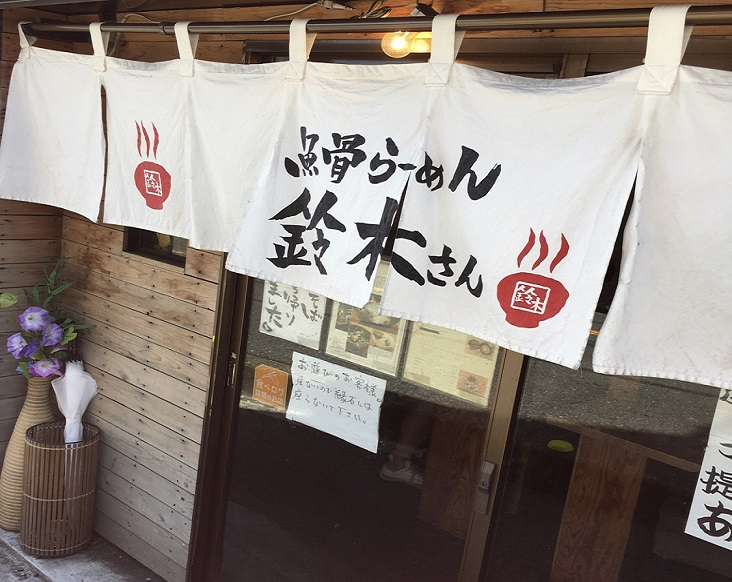
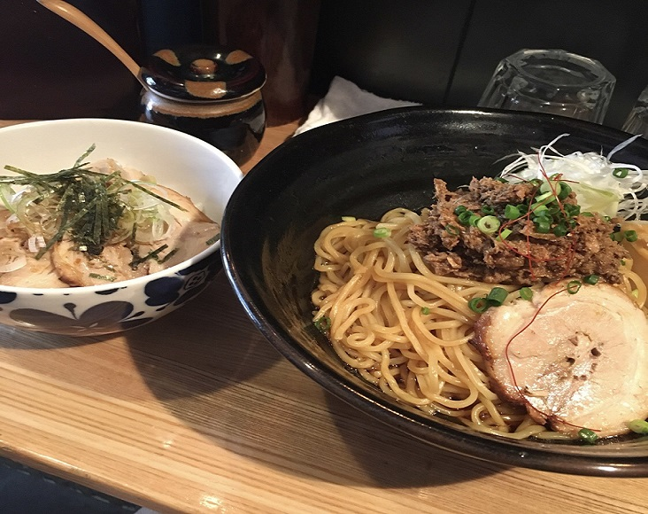
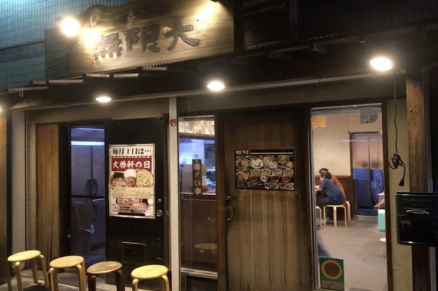
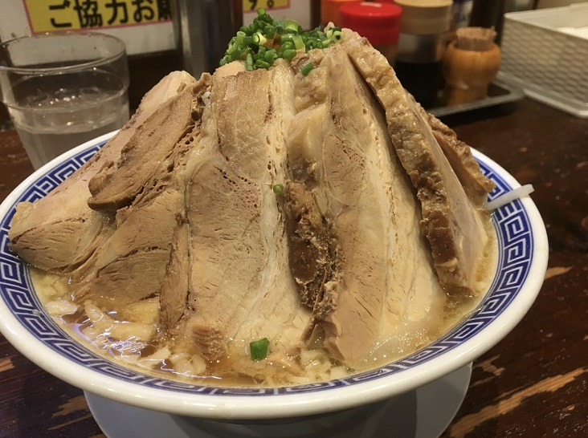
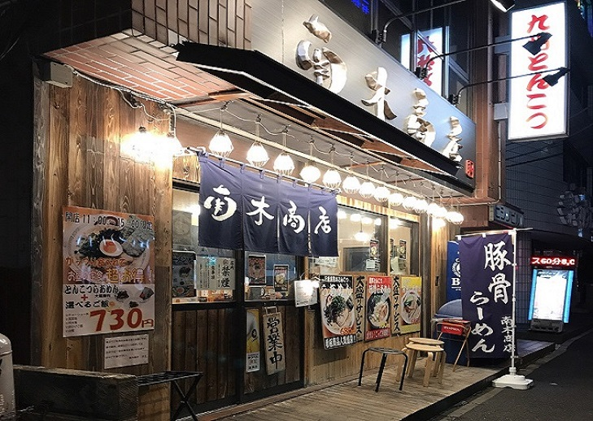
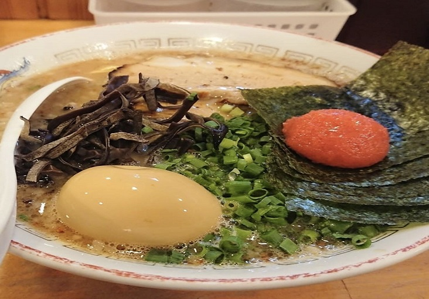

まずは、らーめん！４選。

津田沼はらーめん激戦区です。 津田沼は飲食店の数が多く、ラーメン好きには見逃せない店が並んでいます。 さまざまなジャンルのラーメンが競い合うラーメン激戦区の津田沼で、とっておきの一杯を探してみてください。
■あの佐々木希さんも通う チーズとろとろ『九十九らーめん』

最初におすすめする津田沼のラーメン屋は『九十九とんこつラーメン』。 「99%の九十九ラーメンにあなたの1%を加えて100%の味に」をコンセプトに連日行列必至の名店です。

九十九らーめんにきて一番人気のラーメンがこの、
・元祖チーズ味噌ラーメン 930円
一見意外な組み合わせのチーズと味噌が、とんこつスープと奏でるハーモニーは絶品の味わいです。
ここでもう一つ味わいたいらーめんが、
・トマトチーズ味噌ラーメン 980円
まるでラーメンでマルゲリータを食べているような感覚。
真っ赤なトマトの酸味と、たっぷりチーズのまろやかさは最高です！
九十九らーめん （つくもらーめん）
- 【📒】千葉県船橋市前原西2-21-6
- 【📞】047-404-0141
- 【🕒】11:00～翌5:00
- 【休】なし
- 【🚙】JR津田沼駅北口徒歩3分、新京成新津田沼駅徒歩6分
■さんまがのってるあっさり魚介系『魚骨らーめん 鈴木さん』

次におすすめするラーメン屋は『魚骨ラーメン 鈴木さん』。店名からわかる通り魚を使ったラーメンが名物です。 
中でもサンマを丸ごと煮込んで作る秋刀魚醤フレークと麺が絡まる『鈴木さんままぜそば』は絶品。
魚の旨みと和風ダレ、爽やかなワサビの風味も素晴らしく、口の中がサンマの美味しさでいっぱいになります。
他にもさっぱりな奥深い味わいの鯛骨塩らーめんなど、魚系が食べたければココしかない！
魚骨らーめん 鈴木さん
- 【📒】千葉県船橋市前原西2-32-10
- 【📞】047-478-1175
- 【🕒】11:30～15:00、17:00～翌2:00
- 【休】不定休
- 【🚙】JR津田沼駅(北口)から徒歩5分
■腹が減ったらうちに来い！『ラーメン無限大』(元祖バカ豚)

３つ目に紹介するおすすめのラーメン屋は『ラーメン無限大』。 かつお風味と動物系、背脂が入った甘じょっぱいスープに極太ストレート麺が人気のラーメン店です。

この店の中で人気No.１のらーめんは、
・バカ豚無限大塩らーめん（1,220円）！！！
こんなにデカいが、塩らーめんなので結構ヘルシーあっさりなラーメンになっています。
中盛りなのに麺が300ｇも・・・
チャーシューも名前通りバカで、分厚く７枚も・・・
チャーシューに隠れてもやしも多く、ボリュームＭＡＸなラーメンです。
他にも特製らーめんやつけ麺も人気です。
行ってみる価値大！
ラーメン無限大
- 【📒】千葉県船橋市前原西2-4-10
- 【📞】047-474-4287
- 【🕒】[平日]11:00～24:30[休日]11:00～24:00
- 【休】無休
- 【🚙】JR津田沼駅から徒歩3分
■本場九州の豚骨が味わえる！『九州らーめん 南木商店』

津田沼のラーメン店で最後に紹介するのは『九州らーめん 南木商店』です。 九州の豚骨ラーメンが有名の名店です。
マー油入りの本格的な熊本ラーメンが食べられます。 豚頭骨と背脂の旨みたっぷりのとんこつスープに、焦がしニンニク・揚げニンニク、ニンニク油の 風味を生かした自家製マー油がはいる『とんこつラーメン』が一押しです。 麺は2種類あり、腹ぺこですぐにでも食べたいときは細麺、モチモチ感が好きな人はタピオカを練り込んだ中太ちぢれ麺をどうぞ。
九州らーめん 南木商店
- 【📒】千葉県船橋市前原西2-34-11 ヒシノビル1階
- 【📞】047-493-0555
- 【🕒】[月～土]11:00～翌3:00[日]11:00～翌0:00
- 【休】不定休
- 【🚙】JR津田沼駅北口徒歩3分、新京成新津田沼駅徒歩6分